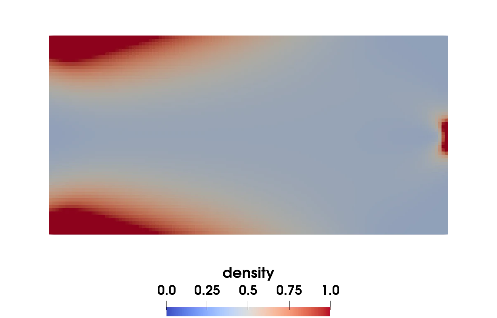
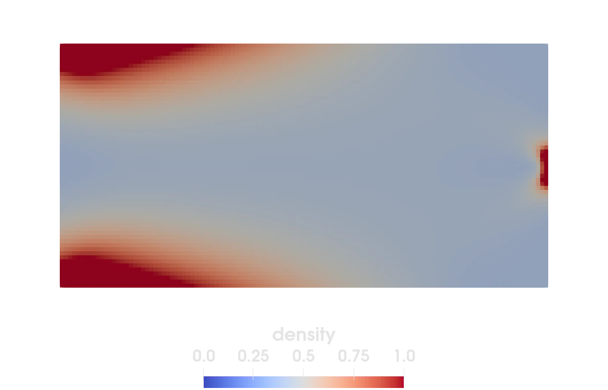
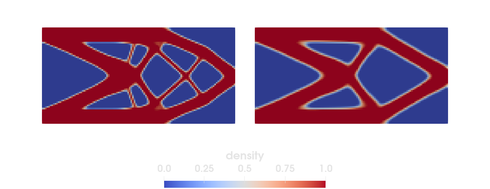

Topology optimization
Keywords: Topology optimization, weak and strong form, non-linear problem, Laplacian, grid topology


Figure 1: Evolution of the material density during topology optimization of the bending beam for a fixed total mass.
This example is also available as a Jupyter notebook: topology_optimization.ipynb.
Introduction
Topology optimization is the task of finding structures that are mechanically ideal. In this example we cover the bending beam, where we specify a load, boundary conditions and the total mass. Then, our objective is to find the most suitable geometry within the design space minimizing the compliance (i.e. the inverse stiffness) of the structure. We shortly introduce our simplified model for regular meshes. A detailed derivation of the method and advanced techniques can be found in [21] and [22].
We start by introducing the local, elementwise density $\chi \in [\chi_{\text{min}}, 1]$ of the material, where we choose $\chi_{\text{min}}$ slightly above zero to prevent numerical instabilities. Here, $\chi = \chi_{\text{min}}$ means void and $\chi=1$ means bulk material. Then, we use a SIMP ansatz (solid isotropic material with penalization) for the stiffness tensor $C(\chi) = \chi^p C_0$, where $C_0$ is the stiffness of the bulk material. The SIMP exponent $p>1$ ensures that the model prefers the density values void and bulk before the intermediate values. The variational formulation then yields the modified Gibbs energy
\[G = \int_{\Omega} \frac{1}{2} \chi^p \varepsilon : C : \varepsilon \; \text{d}V - \int_{\Omega} \boldsymbol{f} \cdot \boldsymbol{u} \; \text{d}V - \int_{\partial\Omega} \boldsymbol{t} \cdot \boldsymbol{u} \; \text{d}A.\]
Furthermore, we receive the evolution equation of the density and the additional Neumann boundary condition in the strong form
\[p_\chi + \eta \dot{\chi} + \lambda + \gamma - \beta \nabla^2 \chi \ni 0 \quad \forall \textbf{x} \in \Omega,\]
\[\beta \nabla \chi \cdot \textbf{n} = 0 \quad \forall \textbf{x} \in \partial \Omega,\]
with the thermodynamic driving force
\[p_\chi = \frac{1}{2} p \chi^{p-1} \varepsilon : C : \varepsilon.\]
We obtain the mechanical displacement field by applying the Finite Element Method to the weak form of the Gibbs energy using Ferrite. In contrast, we use the evolution equation (i.e. the strong form) to calculate the value of the density field $\chi$. The advantage of this "split" approach is the very high computation speed. The evolution equation consists of the driving force, the damping parameter $\eta$, the regularization parameter $\beta$ times the Laplacian, which is necessary to avoid numerical issues like mesh dependence or checkerboarding, and the constraint parameters $\lambda$, to keep the mass constant, and $\gamma$, to avoid leaving the set $[\chi_{\text{min}}, 1]$. By including gradient regularization, it becomes necessary to calculate the Laplacian. The Finite Difference Method for square meshes with the edge length $\Delta h$ approximates the Laplacian as follows:
\[\nabla^2 \chi_p = \frac{1}{(\Delta h)^2} (\chi_n + \chi_s + \chi_w + \chi_e - 4 \chi_p)\]
Here, the indices refer to the different cardinal directions. Boundary elements do not have neighbors in each direction. However, we can calculate the central difference to fulfill Neumann boundary condition. For example, if the element is on the left boundary, we have to fulfill
\[\nabla \chi_p \cdot \textbf{n} = \frac{1}{\Delta h} (\chi_w - \chi_e) = 0\]
from which follows $\chi_w = \chi_e$. Thus for boundary elements we can replace the value for the missing neighbor by the value of the opposite neighbor. In order to find the corresponding neighbor elements, we will make use of Ferrite's grid topology functionalities.
Commented program
We now solve the problem in Ferrite. What follows is a program spliced with comments. The full program, without comments, can be found in the next section.
First we load all necessary packages.
using Ferrite, SparseArrays, LinearAlgebra, Tensors, Printf, VTKHDFNext, we create a simple square grid of the size 2x1. We apply a fixed Dirichlet boundary condition to the left facet set, called clamped. On the right facet, we create a small set traction, where we will later apply a force in negative y-direction.
function create_grid(n) corners = [ Vec{2}((0.0, 0.0)), Vec{2}((2.0, 0.0)), Vec{2}((2.0, 1.0)), Vec{2}((0.0, 1.0)), ] grid = generate_grid(Quadrilateral, (2 * n, n), corners) # node- and facetsets for boundary conditions addnodeset!(grid, "clamped", x -> x[1] ≈ 0.0) addfacetset!(grid, "traction", x -> x[1] ≈ 2.0 && norm(x[2] - 0.5) <= 0.05) return gridendNext, we create the FE values, the DofHandler and the Dirichlet boundary condition.
function create_values() # quadrature rules qr = QuadratureRule{RefQuadrilateral}(2) facet_qr = FacetQuadratureRule{RefQuadrilateral}(2) # cell and facetvalues for u ip = Lagrange{RefQuadrilateral, 1}()^2 cellvalues = CellValues(qr, ip) facetvalues = FacetValues(facet_qr, ip) return cellvalues, facetvaluesendfunction create_dofhandler(grid) dh = DofHandler(grid) add!(dh, :u, Lagrange{RefQuadrilateral, 1}()^2) # displacement close!(dh) return dhendfunction create_bc(dh, grid) dbc = ConstraintHandler(dh) add!(dbc, Dirichlet(:u, getnodeset(grid, "clamped"), (x, t) -> zero(Vec{2}), [1, 2])) close!(dbc) t = 0.0 update!(dbc, t) return dbcendNow, we define a struct to store all necessary material parameters (stiffness tensor of the bulk material and the parameters for topology optimization) and add a constructor to the struct to initialize it by using the common material parameters Young's modulus and Poisson number.
struct MaterialParameters{T, S <: SymmetricTensor{4, 2, T}} C::S χ_min::T p::T β::T η::Tendfunction MaterialParameters(E, ν, χ_min, p, β, η) δ(i, j) = i == j ? 1.0 : 0.0 # helper function G = E / 2(1 + ν) # =μ λ = E * ν / (1 - ν^2) # correction for plane stress included C = SymmetricTensor{4, 2}((i, j, k, l) -> λ * δ(i, j) * δ(k, l) + G * (δ(i, k) * δ(j, l) + δ(i, l) * δ(j, k))) return MaterialParameters(C, χ_min, p, β, η)endTo store the density and the strain required to calculate the driving forces, we create the struct MaterialState. We add a constructor to initialize the struct. The function update_material_states! updates the density values once we calculated the new values.
mutable struct MaterialState{T, S <: AbstractArray{SymmetricTensor{2, 2, T, 3}, 1}} χ::T # density ε::S # strain in each quadrature pointendfunction MaterialState(ρ, n_qp) return MaterialState(ρ, Array{SymmetricTensor{2, 2, Float64, 3}, 1}(undef, n_qp))endfunction update_material_states!(χn1, states, dh) for (element, state) in zip(CellIterator(dh), states) state.χ = χn1[cellid(element)] end returnendNext, we define a function to calculate the driving forces for all elements. For this purpose, we iterate through all elements and calculate the average strain in each element. Then, we compute the driving force from the formula introduced at the beginning. We create a second function to collect the density in each element.
function compute_driving_forces(states, mp, dh, χn) pΨ = zeros(length(states)) for (element, state) in zip(CellIterator(dh), states) i = cellid(element) ε = sum(state.ε) / length(state.ε) # average element strain pΨ[i] = 1 / 2 * mp.p * χn[i]^(mp.p - 1) * (ε ⊡ mp.C ⊡ ε) end return pΨendfunction compute_densities(states, dh) χn = zeros(length(states)) for (element, state) in zip(CellIterator(dh), states) i = cellid(element) χn[i] = state.χ end return χnendFor the Laplacian we need some neighborhood information which is constant throughout the analysis so we compute it once and cache it. The facet-facet neighborhood of the grid is obtained with get_facet_facet_neighborhood, which returns, for each cell and local facet, the neighboring facets across that facet. We iterate through each facet of each element and store the id of the neighboring cell. For boundary facets the neighborhood is empty, and we instead use the neighbor across the opposite facet, as discussed in the introduction.
function cache_neighborhood(grid, topology) opp = (3, 4, 1, 2) # opposite facet of facets 1, 2, 3, 4 neighborhood = Ferrite.get_facet_facet_neighborhood(topology, grid) nbgs = Vector{Vector{Int}}(undef, getncells(grid)) for element in CellIterator(grid) i = cellid(element) _nfacets = nfacets(element) nbg = zeros(Int, _nfacets) for j in 1:_nfacets neighbor_facets = neighborhood[i, j] if !isempty(neighbor_facets) nbg[j] = neighbor_facets[1][1] # assuming only one facet neighbor per cell else # boundary facet nbg[j] = neighborhood[i, opp[j]][1][1] end end nbgs[i] = nbg end return nbgsendNow we calculate the Laplacian using the previously cached neighborhood information.
function approximate_laplacian(nbgs, χn, Δh) ∇²χ = zeros(length(nbgs)) for i in 1:length(nbgs) nbg = nbgs[i] ∇²χ[i] = (χn[nbg[1]] + χn[nbg[2]] + χn[nbg[3]] + χn[nbg[4]] - 4 * χn[i]) / (Δh^2) end return ∇²χendFor the iterative computation of the solution, a function is needed to update the densities in each element. To ensure that the mass is kept constant, we have to calculate the constraint parameter $\lambda$, which we do via the bisection method. We repeat the calculation until the difference between the average density (calculated from the element-wise trial densities) and the target density nearly vanishes. By using the extremal values of $\Delta \chi$ as the starting interval, we guarantee that the method converges eventually.
function compute_χn1(χn, Δχ, ρ, ηs, χ_min) n_el = length(χn) χ_trial = zeros(n_el) ρ_trial = 0.0 λ_lower = minimum(Δχ) - ηs λ_upper = maximum(Δχ) + ηs λ_trial = 0.0 while abs(ρ - ρ_trial) > 1.0e-7 for i in 1:n_el Δχt = 1 / ηs * (Δχ[i] - λ_trial) χ_trial[i] = max(χ_min, min(1.0, χn[i] + Δχt)) end ρ_trial = 0.0 for i in 1:n_el ρ_trial += χ_trial[i] / n_el end if ρ_trial > ρ λ_lower = λ_trial elseif ρ_trial < ρ λ_upper = λ_trial end λ_trial = 1 / 2 * (λ_upper + λ_lower) end return χ_trialendLastly, we use the following helper function to compute the average driving force, which is later used to normalize the driving forces. This makes the used material parameters and numerical parameters independent of the problem.
function compute_average_driving_force(mp, pΨ, χn) n = length(pΨ) w = zeros(n) for i in 1:n w[i] = (χn[i] - mp.χ_min) * (1 - χn[i]) end p_Ω = sum(w .* pΨ) / sum(w) # average driving force return p_ΩendFinally, we put everything together to update the density. The loop ensures the stability of the updated solution.
function update_density(dh, states, mp, ρ, neighborhoods, Δh) n_j = Int(ceil(6 * mp.β / (mp.η * Δh^2))) # iterations needed for stability χn = compute_densities(states, dh) # old density field χn1 = zeros(length(χn)) for j in 1:n_j ∇²χ = approximate_laplacian(neighborhoods, χn, Δh) # Laplacian pΨ = compute_driving_forces(states, mp, dh, χn) # driving forces p_Ω = compute_average_driving_force(mp, pΨ, χn) # average driving force Δχ = pΨ / p_Ω + mp.β * ∇²χ χn1 = compute_χn1(χn, Δχ, ρ, mp.η, mp.χ_min) if j < n_j χn[:] = χn1[:] end end return χn1endNow, we move on to the Finite Element part of the program. We use the following function to assemble our linear system.
function doassemble!(cellvalues::CellValues, facetvalues::FacetValues, K::SparseMatrixCSC, grid::Grid, dh::DofHandler, mp::MaterialParameters, u, states) r = zeros(ndofs(dh)) assembler = start_assemble(K, r) nu = getnbasefunctions(cellvalues) re = zeros(nu) # local residual vector Ke = zeros(nu, nu) # local stiffness matrix for (element, state) in zip(CellIterator(dh), states) fill!(Ke, 0) fill!(re, 0) eldofs = celldofs(element) ue = u[eldofs] elmt!(Ke, re, element, cellvalues, facetvalues, grid, mp, ue, state) assemble!(assembler, celldofs(element), Ke, re) end return K, rendThe element routine is used to calculate the elementwise stiffness matrix and the residual. In contrast to a purely elastomechanic problem, for topology optimization we additionally use our material state to receive the density value of the element and to store the strain at each quadrature point.
function elmt!(Ke, re, element, cellvalues, facetvalues, grid, mp, ue, state) n_basefuncs = getnbasefunctions(cellvalues) reinit!(cellvalues, element) χ = state.χ # We only assemble lower half triangle of the stiffness matrix and then symmetrize it. @inbounds for q_point in 1:getnquadpoints(cellvalues) dΩ = getdetJdV(cellvalues, q_point) state.ε[q_point] = function_symmetric_gradient(cellvalues, q_point, ue) for i in 1:n_basefuncs δεi = shape_symmetric_gradient(cellvalues, q_point, i) for j in 1:i δεj = shape_symmetric_gradient(cellvalues, q_point, j) Ke[i, j] += (χ)^(mp.p) * (δεi ⊡ mp.C ⊡ δεj) * dΩ end re[i] += (-δεi ⊡ ((χ)^(mp.p) * mp.C ⊡ state.ε[q_point])) * dΩ end end symmetrize_lower!(Ke) @inbounds for facet in 1:nfacets(getcells(grid, cellid(element))) if (cellid(element), facet) ∈ getfacetset(grid, "traction") reinit!(facetvalues, element, facet) t = Vec((0.0, -1.0)) # force pointing downwards for q_point in 1:getnquadpoints(facetvalues) dΓ = getdetJdV(facetvalues, q_point) for i in 1:n_basefuncs δu = shape_value(facetvalues, q_point, i) re[i] += (δu ⋅ t) * dΓ end end end end returnendfunction symmetrize_lower!(K) for i in 1:size(K, 1) for j in (i + 1):size(K, 1) K[i, j] = K[j, i] end end returnendWe put everything together in the main function. Here the user may choose the radius parameter, which is related to the regularization parameter as $\beta = ra^2$, the starting density, the number of elements in vertical direction and finally the name of the output. Additionally, the user may choose whether only the final design (default) or every iteration step is saved.
First, we compute the material parameters and create the grid, DofHandler, boundary condition and FE values. Then we prepare the iterative Newton-Raphson method by pre-allocating all important vectors. Furthermore, we create material states for each element and construct the topology of the grid.
During each iteration step, first we solve our FE problem in the Newton-Raphson loop. With the solution of the elastomechanic problem, we check for convergence of our topology design. The criterion has to be fulfilled twice in a row to avoid oscillations. If no convergence is reached yet, we update our design and prepare the next iteration step. Finally, we output the results in paraview and calculate the relative stiffness of the final design, i.e. how much how the stiffness increased compared to the starting point.
function topopt(ra, ρ, n, filename; output = false) # material mp = MaterialParameters(210.0e3, 0.3, 1.0e-3, 3.0, ra^2, 15.0) # grid, dofhandler, boundary condition grid = create_grid(n) dh = create_dofhandler(grid) Δh = 1 / n # element edge length dbc = create_bc(dh, grid) # cellvalues cellvalues, facetvalues = create_values() # Pre-allocate solution vectors, etc. n_dofs = ndofs(dh) # total number of dofs u = zeros(n_dofs) # solution vector un = zeros(n_dofs) # previous solution vector Δu = zeros(n_dofs) # previous displacement correction ΔΔu = zeros(n_dofs) # new displacement correction # create material states states = [MaterialState(ρ, getnquadpoints(cellvalues)) for _ in 1:getncells(grid)] χ = zeros(getncells(grid)) r = zeros(n_dofs) # residual K = allocate_matrix(dh) # stiffness matrix i_max = 300 ## maximum number of iteration steps tol = 1.0e-4 compliance = 0.0 compliance_0 = 0.0 compliance_n = 0.0 conv = false topology = ExclusiveTopology(grid) neighborhoods = cache_neighborhood(grid, topology) # Newton-Raphson loop NEWTON_TOL = 1.0e-8 print("\n Starting Newton iterations\n") # When `output = true` the density of every iteration is stored as one time # step in a single temporal VTKHDF file so the evolution can be animated. vtkhdf = output ? VTKHDFGridFile(string(filename, ".vtkhdf"), grid; temporal = true) : nothing for it in 1:i_max apply_zero!(u, dbc) newton_itr = -1 while true newton_itr += 1 if newton_itr > 10 error("Reached maximum Newton iterations, aborting") break end # current guess u .= un .+ Δu K, r = doassemble!(cellvalues, facetvalues, K, grid, dh, mp, u, states) norm_r = norm(r[Ferrite.free_dofs(dbc)]) if (norm_r) < NEWTON_TOL break end apply_zero!(K, r, dbc) ΔΔu = Symmetric(K) \ r apply_zero!(ΔΔu, dbc) Δu .+= ΔΔu end # of loop while NR-Iteration # calculate compliance compliance = 1 / 2 * u' * K * u if it == 1 compliance_0 = compliance end # check convergence criterion (twice!) if abs(compliance - compliance_n) / compliance < tol if conv println("Converged at iteration number: ", it) break else conv = true end else conv = false end # update density χ = update_density(dh, states, mp, ρ, neighborhoods, Δh) # update old displacement, density and compliance un .= u Δu .= 0.0 update_material_states!(χ, states, dh) compliance_n = compliance # output during calculation if output write_timestep(vtkhdf, Float64(it)) do vtk write_cell_data(vtk, χ, "density") end end end output && close(vtkhdf) # export converged results if !output VTKGridFile(filename, grid) do vtk write_cell_data(vtk, χ, "density") end end @printf "Rel. stiffness: %.4f \n" compliance^(-1) / compliance_0^(-1) returnendLastly, we call our main function and compare the results. To create the complete output with all iteration steps, it is possible to set the output parameter to true.
grid, χ =topopt(0.02, 0.5, 60, "small_radius"; output=false);
@time topopt(0.03, 0.5, 60, "large_radius"; output = false);#topopt(0.02, 0.5, 60, "topopt_animation"; output=true); # can be used to create animationstopopt(0.03, 0.5, 60, "topopt_frames"; output = true); #src iteration series for the docs animation (docs/screenshots.py)
Starting Newton iterations
Converged at iteration number: 65
Rel. stiffness: 4.8466
3.950229 seconds (2.23 M allocations: 2.001 GiB, 3.17% gc time, 1.54% compilation time)
Starting Newton iterations
Converged at iteration number: 65
Rel. stiffness: 4.8466We observe, that the stiffness for the lower value of $ra$ is higher, but also requires more iterations until convergence and finer structures to be manufactured, as can be seen in Figure 2:

Figure 2: Optimization results of the bending beam for smaller (left) and larger (right) value of the regularization parameter $\beta$.
To prove mesh independence, the user could vary the mesh resolution and compare the results.
References
- [21]
- D. R. Jantos, K. Hackl and P. Junker. An accurate and fast regularization approach to thermodynamic topology optimization. International Journal for Numerical Methods in Engineering 117, 991–1017 (2019).
- [22]
- M. Blaszczyk, D. R. Jantos and P. Junker. Application of Taylor series combined with the weighted least square method to thermodynamic topology optimization. Computer Methods in Applied Mechanics and Engineering 393, 114698 (2022).
Plain program
Here follows a version of the program without any comments. The file is also available here: topology_optimization.jl.
using Ferrite, SparseArrays, LinearAlgebra, Tensors, Printf, VTKHDFfunction create_grid(n) corners = [ Vec{2}((0.0, 0.0)), Vec{2}((2.0, 0.0)), Vec{2}((2.0, 1.0)), Vec{2}((0.0, 1.0)), ] grid = generate_grid(Quadrilateral, (2 * n, n), corners) # node- and facetsets for boundary conditions addnodeset!(grid, "clamped", x -> x[1] ≈ 0.0) addfacetset!(grid, "traction", x -> x[1] ≈ 2.0 && norm(x[2] - 0.5) <= 0.05) return gridendfunction create_values() # quadrature rules qr = QuadratureRule{RefQuadrilateral}(2) facet_qr = FacetQuadratureRule{RefQuadrilateral}(2) # cell and facetvalues for u ip = Lagrange{RefQuadrilateral, 1}()^2 cellvalues = CellValues(qr, ip) facetvalues = FacetValues(facet_qr, ip) return cellvalues, facetvaluesendfunction create_dofhandler(grid) dh = DofHandler(grid) add!(dh, :u, Lagrange{RefQuadrilateral, 1}()^2) # displacement close!(dh) return dhendfunction create_bc(dh, grid) dbc = ConstraintHandler(dh) add!(dbc, Dirichlet(:u, getnodeset(grid, "clamped"), (x, t) -> zero(Vec{2}), [1, 2])) close!(dbc) t = 0.0 update!(dbc, t) return dbcendstruct MaterialParameters{T, S <: SymmetricTensor{4, 2, T}} C::S χ_min::T p::T β::T η::Tendfunction MaterialParameters(E, ν, χ_min, p, β, η) δ(i, j) = i == j ? 1.0 : 0.0 # helper function G = E / 2(1 + ν) # =μ λ = E * ν / (1 - ν^2) # correction for plane stress included C = SymmetricTensor{4, 2}((i, j, k, l) -> λ * δ(i, j) * δ(k, l) + G * (δ(i, k) * δ(j, l) + δ(i, l) * δ(j, k))) return MaterialParameters(C, χ_min, p, β, η)endmutable struct MaterialState{T, S <: AbstractArray{SymmetricTensor{2, 2, T, 3}, 1}} χ::T # density ε::S # strain in each quadrature pointendfunction MaterialState(ρ, n_qp) return MaterialState(ρ, Array{SymmetricTensor{2, 2, Float64, 3}, 1}(undef, n_qp))endfunction update_material_states!(χn1, states, dh) for (element, state) in zip(CellIterator(dh), states) state.χ = χn1[cellid(element)] end returnendfunction compute_driving_forces(states, mp, dh, χn) pΨ = zeros(length(states)) for (element, state) in zip(CellIterator(dh), states) i = cellid(element) ε = sum(state.ε) / length(state.ε) # average element strain pΨ[i] = 1 / 2 * mp.p * χn[i]^(mp.p - 1) * (ε ⊡ mp.C ⊡ ε) end return pΨendfunction compute_densities(states, dh) χn = zeros(length(states)) for (element, state) in zip(CellIterator(dh), states) i = cellid(element) χn[i] = state.χ end return χnendfunction cache_neighborhood(grid, topology) opp = (3, 4, 1, 2) # opposite facet of facets 1, 2, 3, 4 neighborhood = Ferrite.get_facet_facet_neighborhood(topology, grid) nbgs = Vector{Vector{Int}}(undef, getncells(grid)) for element in CellIterator(grid) i = cellid(element) _nfacets = nfacets(element) nbg = zeros(Int, _nfacets) for j in 1:_nfacets neighbor_facets = neighborhood[i, j] if !isempty(neighbor_facets) nbg[j] = neighbor_facets[1][1] # assuming only one facet neighbor per cell else # boundary facet nbg[j] = neighborhood[i, opp[j]][1][1] end end nbgs[i] = nbg end return nbgsendfunction approximate_laplacian(nbgs, χn, Δh) ∇²χ = zeros(length(nbgs)) for i in 1:length(nbgs) nbg = nbgs[i] ∇²χ[i] = (χn[nbg[1]] + χn[nbg[2]] + χn[nbg[3]] + χn[nbg[4]] - 4 * χn[i]) / (Δh^2) end return ∇²χendfunction compute_χn1(χn, Δχ, ρ, ηs, χ_min) n_el = length(χn) χ_trial = zeros(n_el) ρ_trial = 0.0 λ_lower = minimum(Δχ) - ηs λ_upper = maximum(Δχ) + ηs λ_trial = 0.0 while abs(ρ - ρ_trial) > 1.0e-7 for i in 1:n_el Δχt = 1 / ηs * (Δχ[i] - λ_trial) χ_trial[i] = max(χ_min, min(1.0, χn[i] + Δχt)) end ρ_trial = 0.0 for i in 1:n_el ρ_trial += χ_trial[i] / n_el end if ρ_trial > ρ λ_lower = λ_trial elseif ρ_trial < ρ λ_upper = λ_trial end λ_trial = 1 / 2 * (λ_upper + λ_lower) end return χ_trialendfunction compute_average_driving_force(mp, pΨ, χn) n = length(pΨ) w = zeros(n) for i in 1:n w[i] = (χn[i] - mp.χ_min) * (1 - χn[i]) end p_Ω = sum(w .* pΨ) / sum(w) # average driving force return p_Ωendfunction update_density(dh, states, mp, ρ, neighborhoods, Δh) n_j = Int(ceil(6 * mp.β / (mp.η * Δh^2))) # iterations needed for stability χn = compute_densities(states, dh) # old density field χn1 = zeros(length(χn)) for j in 1:n_j ∇²χ = approximate_laplacian(neighborhoods, χn, Δh) # Laplacian pΨ = compute_driving_forces(states, mp, dh, χn) # driving forces p_Ω = compute_average_driving_force(mp, pΨ, χn) # average driving force Δχ = pΨ / p_Ω + mp.β * ∇²χ χn1 = compute_χn1(χn, Δχ, ρ, mp.η, mp.χ_min) if j < n_j χn[:] = χn1[:] end end return χn1endfunction doassemble!(cellvalues::CellValues, facetvalues::FacetValues, K::SparseMatrixCSC, grid::Grid, dh::DofHandler, mp::MaterialParameters, u, states) r = zeros(ndofs(dh)) assembler = start_assemble(K, r) nu = getnbasefunctions(cellvalues) re = zeros(nu) # local residual vector Ke = zeros(nu, nu) # local stiffness matrix for (element, state) in zip(CellIterator(dh), states) fill!(Ke, 0) fill!(re, 0) eldofs = celldofs(element) ue = u[eldofs] elmt!(Ke, re, element, cellvalues, facetvalues, grid, mp, ue, state) assemble!(assembler, celldofs(element), Ke, re) end return K, rendfunction elmt!(Ke, re, element, cellvalues, facetvalues, grid, mp, ue, state) n_basefuncs = getnbasefunctions(cellvalues) reinit!(cellvalues, element) χ = state.χ # We only assemble lower half triangle of the stiffness matrix and then symmetrize it. @inbounds for q_point in 1:getnquadpoints(cellvalues) dΩ = getdetJdV(cellvalues, q_point) state.ε[q_point] = function_symmetric_gradient(cellvalues, q_point, ue) for i in 1:n_basefuncs δεi = shape_symmetric_gradient(cellvalues, q_point, i) for j in 1:i δεj = shape_symmetric_gradient(cellvalues, q_point, j) Ke[i, j] += (χ)^(mp.p) * (δεi ⊡ mp.C ⊡ δεj) * dΩ end re[i] += (-δεi ⊡ ((χ)^(mp.p) * mp.C ⊡ state.ε[q_point])) * dΩ end end symmetrize_lower!(Ke) @inbounds for facet in 1:nfacets(getcells(grid, cellid(element))) if (cellid(element), facet) ∈ getfacetset(grid, "traction") reinit!(facetvalues, element, facet) t = Vec((0.0, -1.0)) # force pointing downwards for q_point in 1:getnquadpoints(facetvalues) dΓ = getdetJdV(facetvalues, q_point) for i in 1:n_basefuncs δu = shape_value(facetvalues, q_point, i) re[i] += (δu ⋅ t) * dΓ end end end end returnendfunction symmetrize_lower!(K) for i in 1:size(K, 1) for j in (i + 1):size(K, 1) K[i, j] = K[j, i] end end returnendfunction topopt(ra, ρ, n, filename; output = false) # material mp = MaterialParameters(210.0e3, 0.3, 1.0e-3, 3.0, ra^2, 15.0) # grid, dofhandler, boundary condition grid = create_grid(n) dh = create_dofhandler(grid) Δh = 1 / n # element edge length dbc = create_bc(dh, grid) # cellvalues cellvalues, facetvalues = create_values() # Pre-allocate solution vectors, etc. n_dofs = ndofs(dh) # total number of dofs u = zeros(n_dofs) # solution vector un = zeros(n_dofs) # previous solution vector Δu = zeros(n_dofs) # previous displacement correction ΔΔu = zeros(n_dofs) # new displacement correction # create material states states = [MaterialState(ρ, getnquadpoints(cellvalues)) for _ in 1:getncells(grid)] χ = zeros(getncells(grid)) r = zeros(n_dofs) # residual K = allocate_matrix(dh) # stiffness matrix i_max = 300 ## maximum number of iteration steps tol = 1.0e-4 compliance = 0.0 compliance_0 = 0.0 compliance_n = 0.0 conv = false topology = ExclusiveTopology(grid) neighborhoods = cache_neighborhood(grid, topology) # Newton-Raphson loop NEWTON_TOL = 1.0e-8 print("\n Starting Newton iterations\n") # When `output = true` the density of every iteration is stored as one time # step in a single temporal VTKHDF file so the evolution can be animated. vtkhdf = output ? VTKHDFGridFile(string(filename, ".vtkhdf"), grid; temporal = true) : nothing for it in 1:i_max apply_zero!(u, dbc) newton_itr = -1 while true newton_itr += 1 if newton_itr > 10 error("Reached maximum Newton iterations, aborting") break end # current guess u .= un .+ Δu K, r = doassemble!(cellvalues, facetvalues, K, grid, dh, mp, u, states) norm_r = norm(r[Ferrite.free_dofs(dbc)]) if (norm_r) < NEWTON_TOL break end apply_zero!(K, r, dbc) ΔΔu = Symmetric(K) \ r apply_zero!(ΔΔu, dbc) Δu .+= ΔΔu end # of loop while NR-Iteration # calculate compliance compliance = 1 / 2 * u' * K * u if it == 1 compliance_0 = compliance end # check convergence criterion (twice!) if abs(compliance - compliance_n) / compliance < tol if conv println("Converged at iteration number: ", it) break else conv = true end else conv = false end # update density χ = update_density(dh, states, mp, ρ, neighborhoods, Δh) # update old displacement, density and compliance un .= u Δu .= 0.0 update_material_states!(χ, states, dh) compliance_n = compliance # output during calculation if output write_timestep(vtkhdf, Float64(it)) do vtk write_cell_data(vtk, χ, "density") end end end output && close(vtkhdf) # export converged results if !output VTKGridFile(filename, grid) do vtk write_cell_data(vtk, χ, "density") end end @printf "Rel. stiffness: %.4f \n" compliance^(-1) / compliance_0^(-1) returnend@time topopt(0.03, 0.5, 60, "large_radius"; output = false);#topopt(0.02, 0.5, 60, "topopt_animation"; output=true); # can be used to create animationstopopt(0.03, 0.5, 60, "topopt_frames"; output = true); #src iteration series for the docs animation (docs/screenshots.py)This page was generated using Literate.jl.